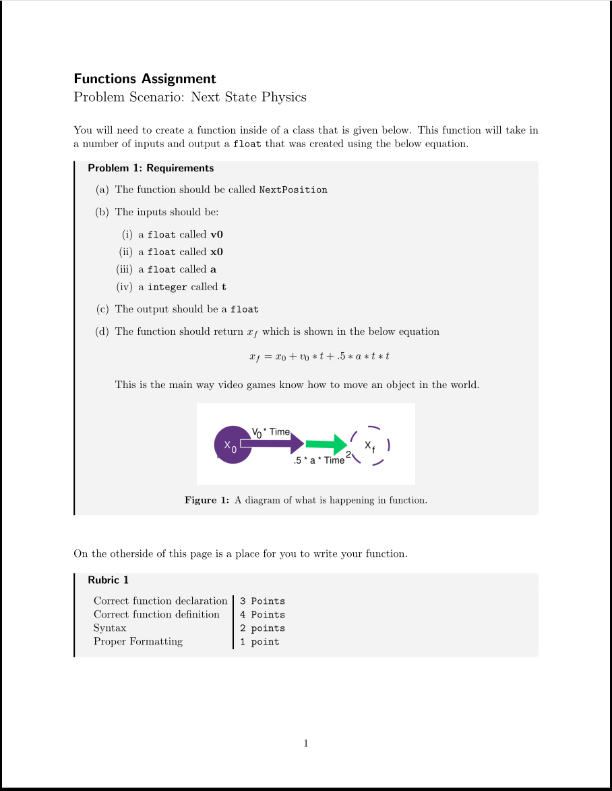

Feb 12. 2026
Not everything can start perfectly.
Observer: Aiden Thomas
Teacher: Eric Baez
Reflections on Classroom Observation
Through the course of observing Eric for approximately 3 weeks, I have come to the profound realization that not everything can be perfect—and perhaps more importantly, that this imperfection is not only acceptable but often leads to unexpected growth opportunities. While some aspects of my observation experience turned out remarkably well, such as discovering that we both have connections with the Head of APCSP (AP Computer Science Principles), which created an immediate rapport beyond the typical observer-teacher dynamic, other elements required significant adaptation and flexibility.
One particularly memorable example occurred during my most recent observation. The classroom’s air conditioning system failed to turn on, creating an uncomfortable environment that made it impossible to proceed with the originally planned computer-based activities. Rather than allowing this setback to derail the entire lesson, we pivoted dramatically and resourcefully. I was fortunate to have designed my formative assessment with flexibility in mind—it could be printed out on paper if necessary. This foresight proved invaluable as we transitioned to working with physical robotics materials and paper-based versions of the assessment. The experience reinforced a crucial lesson about educational planning: adaptability is just as important as preparation.
Thankfully the students I am observing are some of the best behaved he’s had/ever will. There was a student A who was really interested in the fact I was using a Linux enable computer, and was happy to yap some about what operating systems are best for someone going into Computers.
Problem 0.1.
Adaptabilityproblem-label
-
(a)
Where we encounter the physical significance of
This observation period has taught me that the most valuable learning experiences often emerge from navigating unexpected challenges. The ability to remain calm under pressure and creatively solve problems in real-time is perhaps one of the most essential skills for educators. While we might strive for perfection, the reality of teaching exists somewhere in the beautifully imperfect space where theory meets practice.
below is an example of my formative assessment

I’ve realized from my formative assessment, That I’ll have to keep the students skill level in mind.
This is mainly because These students haven’t touched physics at all, and I had accidentally designed this
assessment with college students in mind.
This is a major issue for me given the fact I have - for the past 3 years - been an undergraduate teaching assistant. This will be something I will have to work on in the future. definitely.
In the future I plan to watch closer to how Eric designs his formative assessments, and attempt to model them closer to his designs, while also giving my own spin to them.
After a couple of observations I’m starting to feel more comfortable with the students themselves. First day jitters! I would rate how comfortable I feel in these observations a solid 7/10. I still don’t feel fully comfortable around these students mainly because they are all still kids.